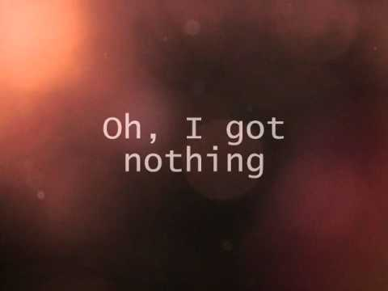

Nothing

Nothing
Am I better off dead?
Am I better off a quitter?
They say I'm better off now
Than I ever was with her
As they take me to my local down the street
I'm smiling but
I'm dying trying not to drag my feet
They say a few drinks
will help me to forget her
But after one too many I know that I'm
never
Only they can see where this is gonna end
They all think
I'm crazy but to me it's perfect sense
[Chorus:]
And my mates are
all there trying to calm me down
'Cause I'm shouting your name all over
the town
I'm swearing if I go there now
I can change her mind turn it
all around
And I know that I'm drunk but I'll say the words
And she'll
listen this time even though they're slurred
Dialed her number and confessed
to her
I'm still in love but all I heard
Was nothing
[Verse 2:]
So I stumble there, along the railings and the fences
I know if I faced her face
,
That she'll come to her senses
Every drunk step I take leads me to
her door
If she sees how much I'm hurting,
She'll take me back for
sure
[Chorus:]
And my mates are all there trying to calm me down
'Cause I'm shouting your name all over the town
I'm swearing if I go there
now
I can change her mind turn it all around
And I know that I'm drunk
but I'll say the words
And she'll listen this time even though they're slurred
Dialed her number and confessed to her
I'm still in love but all I heard
Was nothing
She said nothing
Oh, I wanted words but all I heard was
nothing
Oh, I got nothing
Oh, I got nothing
Oh, I wanted words but
all I heard was nothing
Ohh, sometimes love's intoxicating
Ohh, you're
coming down, your hands are shaking
When you realize there's no one waiting
Am I better off dead?
Am I better off a quitter?
They say I'm better
off now
Than I ever was with her
[Chorus:]
And my mates are all
there trying to calm me down
'Cause I'm shouting your name all over the town
I'm swearing if I go there now
I can change her mind
Turn it all around
And I know that I'm drunk but I'll say the words
And she'll listen this time
even though they're slurred
Dialed her number and confessed to her
I'm still
in love but all I heard
Was nothing
She said nothing
Oh, I wanted words
but all I heard was nothing
Oh, I got nothing
I got nothing
I wanted words
but all I heard was nothing
Ohh I got nothing
I got nothing
Ничего
Мне лучше сдохнуть?
Лучше так, чем быть слабаком?
Друзья говорят,
что без нее мне будет лучше,
Чем когда я был с ней.
Когда меня тащат в
ближайшую пивную,
Я улыбаюсь, но еле волочу ноги.
Друзья говорят,
что несколько стопок помогут мне забыть ее,
Но уже после первой я понимаю,
что никогда не смогу забыть.
Наверное, только они знают, когда все это кончится.
Они все думают, что я сошел с ума, но для меня это имеет смысл.
[Припев:]
Мои приятели пытаются успокоить меня,
Потому что я кричу твое
имя на весь город.
Я клянусь, если я увижу ее сейчас,
Я смогу убедить
ее изменить решение, и тогда все будет по-другому.
Я знаю, что пьян, но
я скажу все нужные слова,
И на этот раз она выслушает их, пусть они и звучат
невнятно.
Я набрал ее номер и признался,
Что все еще люблю ее. Но в ответ
не услышал
Ничего.
[Куплет 2:]
Иду, спотыкаясь, вдоль каких-то
оград и заборов...
Я знаю, что если б она увидела меня сейчас,
К ней сразу
вернулся бы рассудок.
Каждый мой пьяный шаг приближает меня к ее двери,
Если
бы она увидела, как сильно я страдаю,
Она, конечно, приняла бы меня обратно
.
[Припев:]
Мои приятели пытаются успокоить меня,
Потому что
я кричу твое имя на весь город.
Я клянусь, если я увижу ее сейчас,
Я смогу
убедить ее изменить решение, и тогда все будет по-другому.
Я знаю, что пьян
, но я скажу все нужные слова,
И на этот раз она выслушает их, пусть они и
звучат невнятно.
Я набрал ее номер и признался,
Что все еще люблю ее
. Но в ответ не услышал
Ничего.
Она ничего не сказала,
О,
мне нужны были слова, но я не услышал ничего.
О, я не добился ничего,
О, я не добился ничего.
О, мне нужны были слова, но я не услышал ничего.
О, иногда любовь отравляет.
Тебе становится плохо и руки начинают
трястись,
Как только ты понимаешь, что никто тебя не ждет.
Мне
лучше сдохнуть?
Лучше так, чем быть слабаком?
Друзья говорят, что без
нее мне будет лучше,
Чем когда я был с ней.
[Припев:]
Мои
приятели пытаются успокоить меня,
Потому что я кричу твое имя на весь город.
Я клянусь, если я увижу ее сейчас,
Я смогу убедить ее изменить решение,
И тогда все будет по-другому.
Я знаю, что пьян, но я скажу все нужные
слова,
И на этот раз она выслушает их, пусть они и звучат невнятно.
Я
набрал ее номер и признался,
Что все еще люблю ее. Но в ответ не услышал
Ничего.
Она ничего не сказала,
О, мне нужны были слова, но я не
услышал ничего.
О, я не добился ничего,
О, я не добился ничего.
О,
мне нужны были слова, но я не услышал ничего.
О, я не добился ничего...
Я не добился ничего...